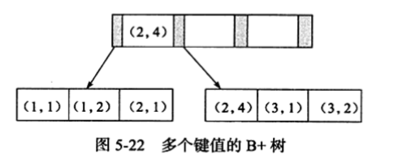

设计目标是面向在线事务（OLTP）处理的应用。
支持事务、行级锁、通过多版本并发控制（MVCC）支持高并发、提供一致性非锁定读、next-key locking避免幻读、主键聚集索引
设计目标是面向OLAP应用。
不支持事务、不支持行锁、表锁设计、支持全文索引
略
InnoDB存储引擎是多线程模型，后台有多个不同的线程，用于处理不同的任务。
内部由多个循环组成。包括主循环（loop），后台循环（background loop）
主循环每隔一秒的操作
主循环每隔10秒的操作
InnoDB是基于磁盘的存储系统，为了弥补cpu和磁盘性能的差距，将从磁盘读出的数据保存在内存中，下次读取先从缓冲池中读取。有数据更新也先更新缓冲池的数据，通过checkpoint机制写回磁盘。缓冲池中包括索引页、数据页、undo页、插入缓存、锁信息等
最近做少使用算法，最频繁使用的页在List前端，最少使用的页在List末尾。当缓冲池容量不足容纳新数据时，先从尾部释放数据页。新数据插入在List的midpoint（List的5/8，对朴素LRU的优化，朴素LRU插入List头部。避免大量一次性查询把频繁使用的页刷出缓冲池）
当数据被更新，缓冲池中的数据首先被更新，修改之后的页称为脏页。脏页会保存到Flush List中，通过checkpoint机制把脏页数据写回磁盘
首先把重做日志信息存入缓冲区，然后按照一定频率同步到重做日志文件中。以下三种情况都会触发重做日志缓存同步到重做日志文件：
为了防止宕机导致事务未提交信息丢失，在事务提交时，先把数据保存到重做日志（redo log）中，再修改页。保证了持久性（D）
发生宕机，重启之后自动从重做日志中恢复数据。
但是这里有以下问题：
check point就是为了解决这些问题：
check point触发时机：
我们知道索引分为聚集索引和非聚集索引。
聚集索引一般是自增的唯一id，页中的数据记录按顺序存放，写入的时候不需要随机读取其他页中的数据，写入速度很快（如果用UUID作为主键，写入速度会很慢，每次写入都需要随机读）
实际应用中，一张表往往还有非聚集索引的存在。非聚集索引叶子节点的插入不是顺序的，需要离散的访问非聚集索引页，随机读取导致了插入数据的性能下降。插入缓存就是为了优化这种场景下的插入速度
对于非聚集索引的插入，会先判断非聚集索引页是否在缓冲池中，如果在缓冲池中，直接插入索引页，如果没在，先放入到insert buffer对象中，然后再以一定的频率把insert buffer中的数据和非聚集索引的叶子节点进行数据合并
insert buffer 的数据结构也是B+树，有记录要插入的时候，会对记录进行封装，按照记录的插入顺序进行编号，是顺序写入
如果InnoDB正在写入某个页的数据到磁盘，正好写了一部分的时候宕机了。这种情况称为部分写失效，会导致数据丢失
double write由两部分组成。一部分是double write缓冲，一部分是物理磁盘连续共享空间。在刷新脏页数据的时候，先复制一份脏页数据到两次写缓存中，在顺序写入共享磁盘中（因为是顺序写性能影响不大）。最后写入数据存储磁盘中（离散写）
hash是非常快的查询方式，时间负责度为O（1）。而B+树的查找次数取决于树的高度。
如果一个页被频繁的访问，而且访问模式也相同（联合索引使用最左原则）。会自动针对这页数据根据缓冲池中的索引建立Hash索引提高查询速度
可以在发出一个IO请求后，在发出另外的IO请求，没必要等待上一次的IO请求处理完成。把全部IO请求都发出，等待所有IO操作的完成，这就是AIO（Aysnc IO）
MySQL据库和InnoDB存储引擎有很多类型的文件，每种文件用处不同。主要有参数文件、sokcet文件、pid文件、日志文件、表结构文件、存储引擎文件
InnoDB中，表数据都是按照主键顺序组织存放的。每张表都有主键，如果没有显示的定义主键，会把唯一索引作为主键。如果唯一索引也没有，会自动创建6字节大小的指针作为主键
所有数据都存放在表空间中，表空间又由段、区、页组成
数据库的索引结构是B+树，高度一般在2-4层，一次查找只需要2-4次的io。索引分为聚集索引和非聚集索引
按照每张表的主键构建的B+树，叶子节点中存储着整张表的行记录数据，每个叶子节点通过双向链表进行连接。因为实际的数据页只能按照一个聚集索引进行排列，每张表只能拥有一个聚集索引
聚集索引对于主键的范围查找和排序查找速度非常快。
叶子节点不包含行记录的全部数据，叶子节点只存储了键值和指向聚集索引的书签
在线架构改变，通过php脚本实现，在索引的创建或删除过程中，可以有读写事务对表进行操作。过程如下：
通过新的alter语法，可以选择索引的创建方式
Cardinality表示索引中唯一值的数据的估计值（不是实时更新，使用采样法延迟更新），应尽可能接近表中数据总行数。
联合索引也是一棵B+树，不同的是索引键值的数量大于等于2。联合索引的第二个好处是已经对第二个键值做了排序处理，减少了一次额外的排序操作

MyISAM引擎的锁是表锁设计，并发情况下读没有问题，但是写的性能会比较低
实现原理是通过MVCC机制实现，如果读取的行正处于update或delete中，读操作不会去等待行上X锁的释放，而是去读取行的快照数据。
一致性非锁定读可以极大的提高并发性能
不同的事务隔离级别，读取的快照版本是有差别的
默认配置下，采用可重复读的隔离级别，读取数据采取的是一致性非锁定读。
但是某些场景下需要对读取操作加锁来保证严格的数据一致性，这时候可以显式的对读取的记录进行加锁：
默认隔离级别（可重复读）下，默认加的是next-key lock（为了解决幻读问题），当索引中含有唯一属性时，会降级为record lock。
在读已提交隔离级别下，加的是record lock
举个例子：
现在表z，有a，b两列，a是主键索引，b建立辅助索引。现在记录如下：（1，1）（3，1）（5，3）（7，6）（10，8）
select * from z where b=3 for update
因为锁是通过对索引加锁实现的。所以这里需要对主键索引和辅助索引加锁，主键索引加的锁是record lock，辅助索引加的锁是next-key lock，锁定范围是（1，3）、3、（3，6）